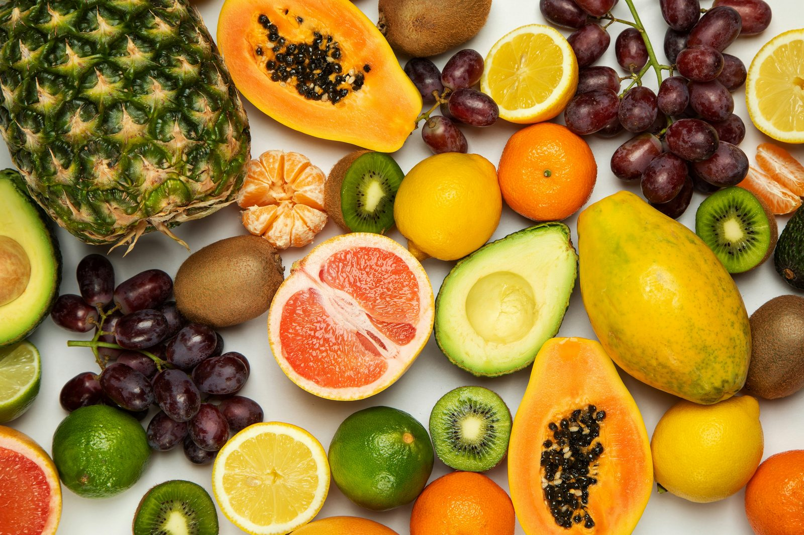
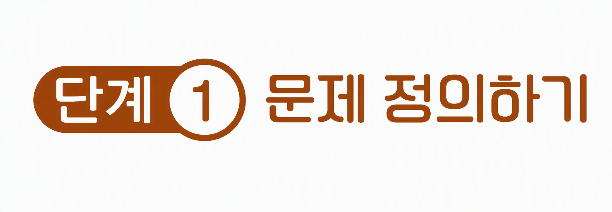
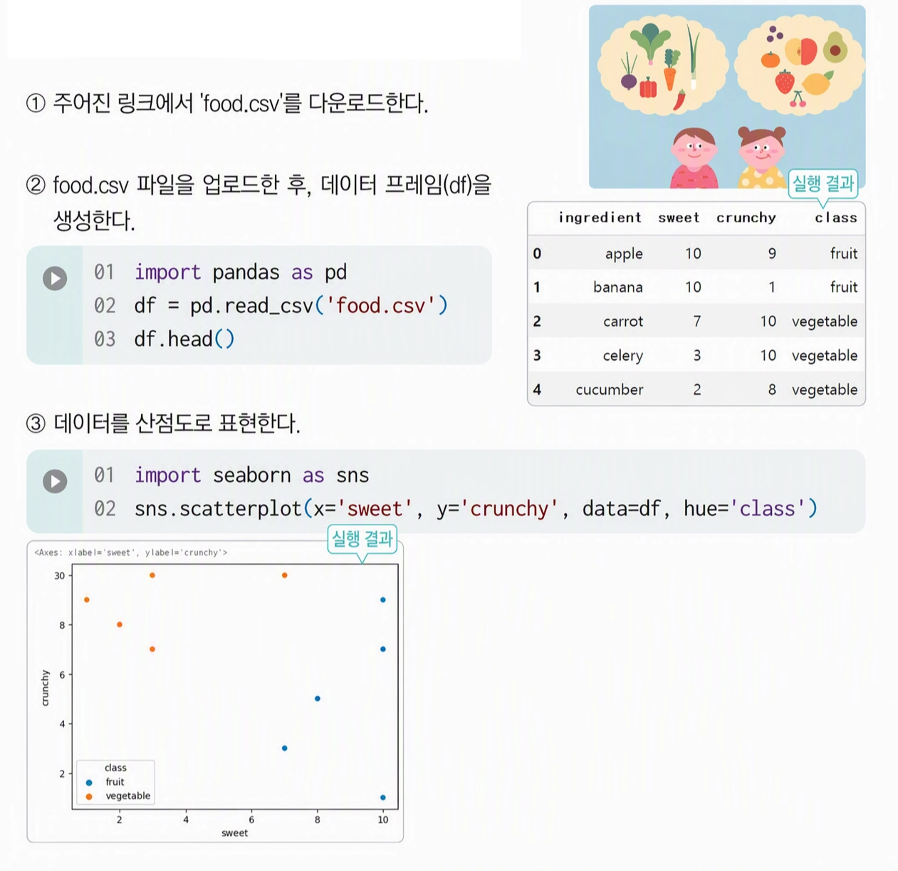
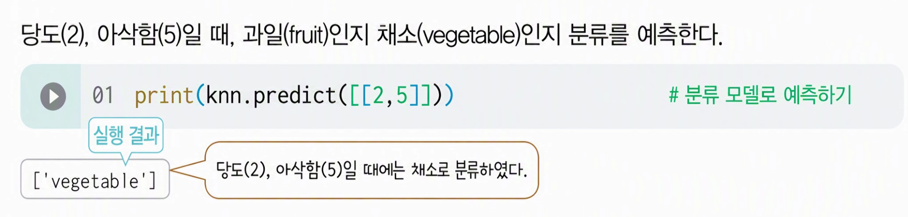
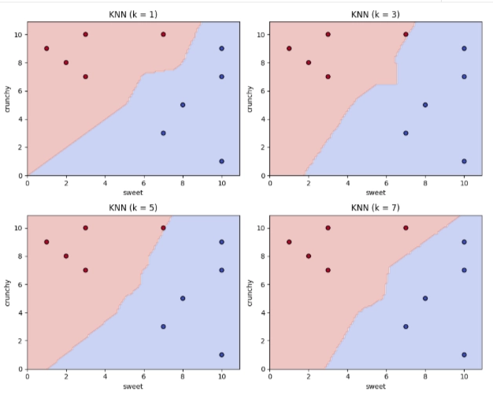

[15차시_KNN] 당도와 아삭함으로 과일, 채소 분류







최근접 이웃(K-Nearest Neighbors, KNN) 알고리즘
새로운 데이터가 들어왔을 때 가장 가까운 개의 기존 데이터를 바탕으로 해당 데이터의 범주나 값을 예측하는 지도학습 알고리즘
| 구분 | 내용 |
|---|---|
| 기본 개념 | 새로운 데이터 주변의 가장 가까운 $K$개 이웃 데이터의 정보를 확인하여 분류 또는 회귀를 수행하는 모델 |
| 작동 원리 | 1. 데이터 간 거리를 계산(유클리드 거리 등) 2. 가장 가까운 K개의 이웃 선정 3. 분류: 다수결 원칙 적용 / 회귀: 이웃값들의 평균 산출 |
| 주요 특징 | - 게으른 학습(Lazy Learning): 사전 학습 모델을 만들지 않고 예측 시점에 거리 계산 진행 - 비파라미터 모델: 데이터 분포에 대한 사전 가정 없음. |
| 장점 | - 개념 및 구현이 직관적이고 간단함. - 데이터 분포를 미리 가정할 필요가 없음. |
| 단점 | - 데이터 수가 많거나 차원이 높아질 경우 연산 비용 급증 - 차원의 노이즈 및 이상치(Outlier)에 민감함. |
| 핵심 매개변수 | - K의 값: K가 너무 작으면 과적합(Overfitting), 너무 크면 과소적합(Underfitting) 발생 - 거리 측정 방식: 유클리드(Euclidean), 맨해튼(Manhattan) 거리 등 |



[공통 추가 활동]
1. 값 변화 실험 (=1, 3, 5, 7): n_neighbors의 값을 변경하며 예측 결과가 어떻게 바뀌는지 비교하고, 경계면의 변화를 관찰하기
- 의미: 하이퍼파라미터 변경에 따른 모델의 예측 영역 및 분류 경계면 변화 관찰
- 학습 효과: 값이 작을 때의 과적합 현상과 값이 커질 때 편향이 커지는 원리 이해
import numpy as np
import matplotlib.pyplot as plt
from sklearn.neighbors import KNeighborsClassifier
# k값에 따른 분류 경계 변화 확인 (k = 1, 3, 5, 7)
k_list = [1, 3, 5, 7]
fig, axes = plt.subplots(2, 2, figsize=(10, 8))
# 경계면 그리기를 위한 격자 생성
x_min, x_max = df['sweet'].min() - 1, df['sweet'].max() + 1
y_min, y_max = df['crunchy'].min() - 1, df['crunchy'].max() + 1
xx, yy = np.meshgrid(np.arange(x_min, x_max, 0.1), np.arange(y_min, y_max, 0.1))
# Target 라벨을 숫자 형태로 변환 (시각화용)
y_encoded = np.where(y == 'fruit', 0, 1)
for idx, k in enumerate(k_list):
ax = axes[idx // 2, idx % 2]
# KNN 모델 생성 및 학습
model = KNeighborsClassifier(n_neighbors=k)
model.fit(X, y_encoded)
# 격자점에 대한 예측값 생성
Z = model.predict(np.c_[xx.ravel(), yy.ravel()])
Z = Z.reshape(xx.shape)
# 경계면 및 산점도 출력
ax.contourf(xx, yy, Z, alpha=0.3, cmap=plt.cm.coolwarm)
ax.scatter(df['sweet'], df['crunchy'], c=y_encoded, cmap=plt.cm.coolwarm, edgecolors='k')
ax.set_title(f'KNN (k = {k})')
ax.set_xlabel('sweet')
ax.set_ylabel('crunchy')
plt.tight_layout()
plt.show()

k값 변화에 따른 모델 특성 상세 해석
• k = 1 (복잡한 결정 경계 및 과대적합 위험)
◦ 가장 가까운 1개 데이터만 반영하여 경계면이 굴곡지고 매우 복잡한 형태를 띰.
◦ 노이즈나 개별 데이터 포인트에 민감하게 반응하여 과대적합(Overfitting) 가능성이 높음.
• k = 3 (경계면 평탄화 시작)
◦ 주변 3개 이웃의 다수결을 반영하여 k=1 대비 경계면의 요철이 일부 완화됨.
◦ 개별 데이터 영향력이 감소하며 국소적인 패턴을 다소 부드럽게 흡수함.
• k = 5 (안정적인 일반화 경계):
◦ 경계선이 전반적으로 대각선 형태를 이루며 비교적 매끄럽게 형성됨.
◦ 모델의 일반화 성능(Generalization)이 가장 잘 확보되는 균형적인 상태임.
• k = 7 (경계 단순화 및 과소적합 위험):
◦ 더 넓은 범위의 이웃을 고려함에 따라 경계가 더욱 단순해짐.
◦ k값이 지나치게 커질 경우 세부 패턴을 놓치는 과소적합(Underfitting) 위험이 존재함.
2. 이웃 거리 및 인덱스 확인: knn.kneighbors([[2, 5]]) 코드를 활용하여 실제로 가장 가까운 개의 데이터가 무엇인지 식별하고 거리를 직접 계산하기
- 의미: 예측 대상 데이터와 실제 주변 데이터들 간의 유클리드 거리 및 이웃 인덱스 산출
- 학습 효과: KNN 알고리즘의 동작 방식(유사도 기반 거리 계산 과정) 및 최종 예측 산출 알고리즘 체득
# k=3 기준으로 예측할 점 [2, 5] 정의
new_point = [[2, 5]]
knn = KNeighborsClassifier(n_neighbors=3)
knn.fit(X, y)
# 가장 가까운 이웃 3개의 거리(distances)와 인덱스(indices) 계산
distances, indices = knn.kneighbors(new_point)
print(f'예측 대상 데이터: {new_point[0]}')
print('='*40)
for i in range(len(indices[0])):
idx = indices[0][i]
dist = distances[0][i]
print(f'이웃 {i+1}: 인덱스 {idx} | 이름: {df.loc[idx, 'ingredient']} | 거리: {dist:.2f} | 클래스: {df.loc[idx, 'class']}')
3. 새로운 특성(Feature) 추가: '신맛(sourness)’이라 3번째 특성을 추가하여 3차원 공간에서의 KNN 분류해보기
- 의미: 기존 2차원 특성 데이터에 차원을 추가하여 3차원 공간 모델링 실행
- 학습 효과: 데이터 특성(Feature) 개수 증가에 따른 고차원 공간 데이터 표현법 및 차원의 확장 개념 파악
# 3번째 특성(sourness) 임의 추가
df['sourness'] = [2, 1, 1, 8, 2] # 각 과일/채소에 맞는 신맛 예시 데이터
# 3개의 특성을 X로 설정
X_3d = df[['sweet', 'crunchy', 'sourness']].values
y_3d = df['class']
# 3차원 KNN 모델 학습
knn_3d = KNeighborsClassifier(n_neighbors=3)
knn_3d.fit(X_3d, y_3d)
# 새로운 데이터 예측 (당도:2, 아삭함:5, 신맛:7)
test_data_3d = [[2, 5, 7]]
pred_3d = knn_3d.predict(test_data_3d)
print(f'3D 입력 데이터 {test_data_3d[0]}의 예측 결과: {pred_3d[0]}')
# 3D 산점도 시각화
fig = plt.figure(figsize=(8, 6))
ax = fig.add_subplot(111, projection='3d')
for label, color in zip(['fruit', 'vegetable'], ['red', 'blue']):
subset = df[df['class'] == label]
ax.scatter(subset['sweet'], subset['crunchy'], subset['sourness'], label=label, s=60)
ax.scatter(test_data_3d[0][0], test_data_3d[0][1], test_data_3d[0][2], color='green', s=100, marker='^', label='New Point')
ax.set_xlabel('Sweet')
ax.set_ylabel('Crunchy')
ax.set_zlabel('Sourness')
plt.legend()
plt.show()데이터 정규화(Standardization): 특성 간 단위/범위가 다를 때 발생할 수 있는 거리오류를 확인하고 StandardScaler를 적용하기
- 의미: 특성 간 단위/스케일 격차 발생 상황 연출 및 정규화(Standardization) 전후 비교
- 학습 효과: 특정 특성의 단위 크기가 거리 계산 결과를 왜곡하는 문제점 인식 및 데이터 전처리의 중요성 습득
- Min-Max 정규화 (Min-Max Scaling)
• 데이터를 과 사이의 값으로 변환하는 방식
• 공식을 적용하여 최솟값은 , 최댓값은 로 매핑함.
- 표준화 (Standardization / Z-score Normalization)
• 데이터의 평균을 ,, 표준편차를 로 만드는 방식
• 음수와 양수 값이 모두 존재하게 되며, 이상치(Outlier)에 영향을 덜 받는 장점이 있음.
from sklearn.preprocessing import StandardScaler
# 당도 단위만 1000배로 늘려서 스케일 불균형 상황 연출
df_scaled_test = df.copy()
df_scaled_test['sweet'] = df_scaled_test['sweet'] * 1000
X_unscaled = df_scaled_test[['sweet', 'crunchy']].values
y_unscaled = df_scaled_test['class']
# 1. 정규화 전 모델 학습
knn_unscaled = KNeighborsClassifier(n_neighbors=3)
knn_unscaled.fit(X_unscaled, y_unscaled)
# 2. StandardScaler로 정규화 적용
scaler = StandardScaler()
X_scaled = scaler.fit_transform(X_unscaled)
knn_scaled = KNeighborsClassifier(n_neighbors=3)
knn_scaled.fit(X_scaled, y_unscaled)
# 새로운 테스트 데이터 (스케일 조정 전 기준 [2000, 5])
test_unscaled = [[2000, 5]]
test_scaled = scaler.transform(test_unscaled)
print('--- 정규화 전후 비교 ---')
print(f"정규화 적용 전 예측 결과: {knn_unscaled.predict(test_unscaled)[0]}")
print(f"정규화 적용 후 예측 결과: {knn_scaled.predict(test_scaled)[0]}")[개별 추가 활동]
| 학번 | Kaggle 데이터셋 이름 | 선택할 입력 특성 2개 (X) | 타겟 분류 (y) |
|---|---|---|---|
| 01~02 | Wine Quality Dataset | Alcohol, pH | Quality Class (Good / Bad) |
| 03~04 | Heart Attack Analysis & Prediction Dataset | age, trtbps (혈압) | output (위험도 0 / 1) |
| 05~06 | Mobile Price Classification | ram, battery_power | price_range (0 / 1 / 2 / 3) |
| 07~08 | Diabetes Prediction Dataset | bmi, blood_glucose_level | diabetes (0 / 1) |
| 09~10 | Student Performance Dataset | studytime, absences | passed (0 / 1) |
| 11~12 | Water Quality Dataset | pH, Hardness | Potability (음용 가능 여부 0 / 1) |
| 13~14 | Car Price Prediction Dataset | Selling_Price, Present_Price | Fuel_Type (Petrol / Diesel) |
| 15~16 | Customer Segmentation Dataset | Annual Income, Spending Score | Gender 또는 Cluster Class |